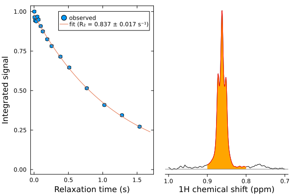

1D relaxation analysis
Let's analyse a measurement of 1H T2 relaxation, acquired as a single pseudo-2D spectrum. First, we need to load the required packages. We will use LsqFit for the non-linear least squares fitting, Measurements to handle uncertainties, and Statistics for calculation of means and standard deviations.
Data have been processed in Topspin (using xf2), so can be loaded using the loadnmr function.
using NMRTools
using Plots
using LsqFit
using Measurements
using Statistics
spec = exampledata("pseudo2D_T2") Downloading artifact: pseudo2D_T2Set up parameters
The experiment uses a vclist to encode the relaxation time. The contents of this list are automatically parsed when the spectrum is loaded, and can be accessed with the acqus command:
acqus(spec, :vclist)16-element Vector{Int64}:
1
2
4
8
12
16
24
32
48
64
96
128
192
256
320
384Each loop corresponds to a delay of 4 ms, so from this we can calculate a list of relaxation times. The spectrum we have just loaded has an UnknownDimension as the non-frequency dimension. We need to replace this with a TrelaxDimension that encodes the relaxation delays, and we can do this with the setrelaxtimes function:
τ = acqus(spec, :vclist) * 4e-3
spec = setrelaxtimes(spec, τ, "s")Next, we specify the chemical shift ranges used for plotting, fitting, and for determination of the noise level.
plotrange = 0.7 .. 1.0 # ppm
datarange = 0.8 .. 0.9 # ppm
noiseposition = -2 # ppmPlot the data
To take a quick look at the data, we can plot the experiment either as 3D lines using the plot command, or as a heatmap:
plot(
plot(spec[plotrange,:]),
heatmap(spec[plotrange,:])
)Calculate noise and peak integrals
Now, we can determine the measurement noise, by taking the standard deviation of integrals across the different gradient points:
# create a selector for the noise, matching the width of the data range
noisewidth = datarange.right - datarange.left
noiserange = (noiseposition-0.5noisewidth)..(noiseposition+0.5noisewidth)
# integrate over the noise regions and take the standard deviation
# (calculate the sum over the frequency dimension F1Dim, and use
# `data` to convert from NMRData to a regular array)
noise = sum(spec[noiserange,:], dims=F1Dim) |> data |> std
# calculate the integral of the data region similarly, using vec to convert to a list
integrals = sum(spec[datarange,:], dims=F1Dim) |> data |> vec
# normalise noise and integrals by the maximum value
noise /= maximum(integrals)
integrals /= maximum(integrals)Fitting
Now, we can fit the data to an exponential decay using the LsqFit package:
# model parameters are (I0, R2)
function model(t, p)
I0 = p[1]
R2 = p[2]
@. I0 * exp(-R2 * t)
end
p0 = [1.0, 1.0] # rough guess of initial parameters
fit = curve_fit(model, τ, integrals, p0) # run the fit
# extract the fit parameters and standard errors
pfit = coef(fit)
err = stderror(fit)
R2 = (pfit[2] ± err[2])\[0.837 \pm 0.017\]
So we see that the fitted R₂ relaxation rate is 0.844 ± 0.016 s⁻¹
Plot the results
Finally, plot the results:
# calculate the best-fit curve across 100 points so it looks nice and smooth
x = LinRange(0, maximum(τ)*1.1, 100)
yfit = model(x, pfit)
p1 = scatter(τ, integrals .± noise, label="observed",
frame=:box,
xlabel="Relaxation time (s)",
ylabel="Integrated signal",
title="",
ylims=(0,Inf), # make sure y axis starts at zero
widen=true,
grid=nothing)
plot!(p1, x, yfit, label="fit (R₂ = $R2 s⁻¹)")
p2 = plot(spec[plotrange,1],linecolor=:black)
plot!(p2, spec[datarange,1], fill=(0,:orange), linecolor=:red)
hline!(p2, [0], c=:grey)
title!(p2, "")
plot(p1, p2, layout=(1,2))